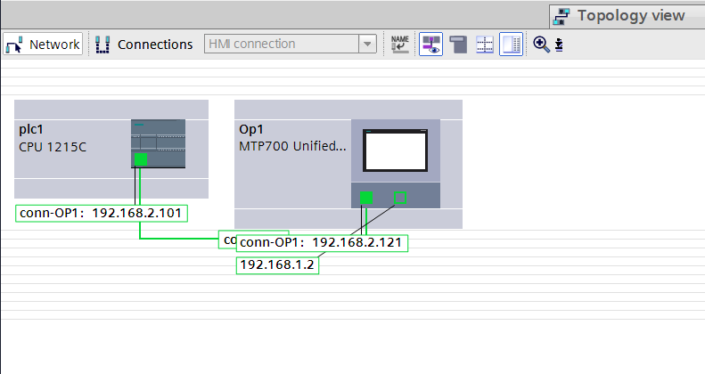
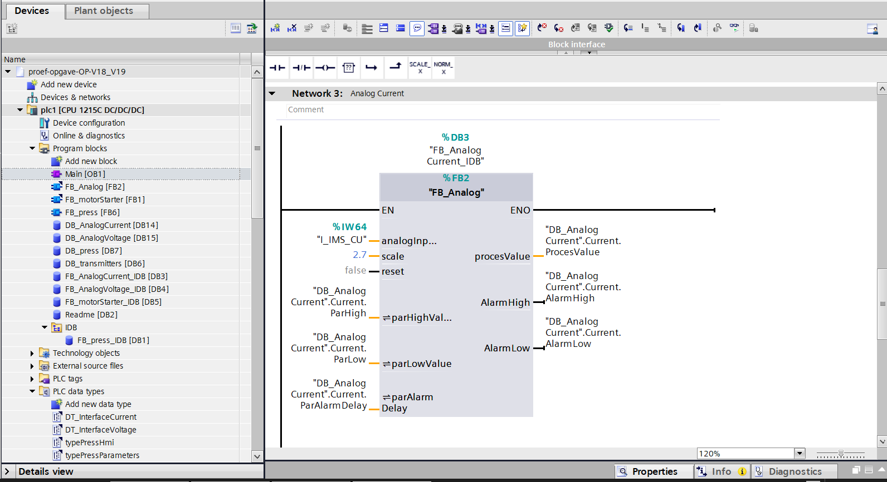
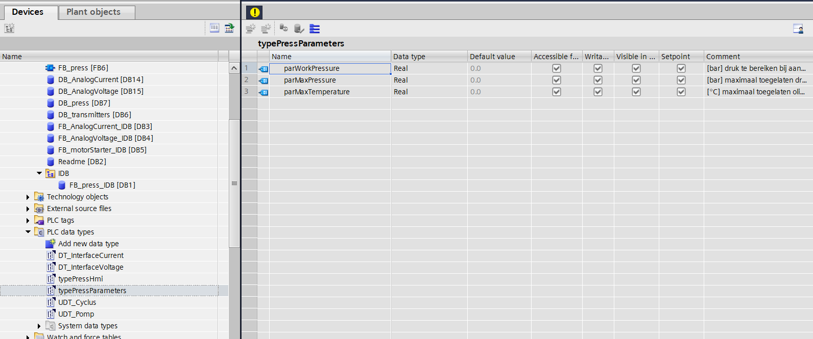

← Terug naar projecten
Network 3.1 · Project 1
Smart Factory Project — Basis
In deze eerste projectfase bouwde ik zelfstandig de volledige basisstructuur van een Smart Factory-project op in Siemens TIA Portal V19. Vanuit een lege projectomgeving configureerde ik de hardware, netwerkcommunicatie, datastructuren, gebruikersrechten en meertalige bediening.
Projectinformatie
| Software | Siemens TIA Portal V19 |
|---|---|
| Hardware | Siemens S7-1200 PLC, WinCC Unified Comfort Panel |
| Doelstellingen | Zelfstandig een gestructureerde projectbasis opbouwen met correcte hardware- en netwerkconfiguratie, herbruikbare datastructuren en toegangsbeheer als voorbereiding op de verdere HMI-ontwikkeling. |
| Technische vaardigheden | Hardwareconfiguratie, netwerkconfiguratie, PLC Data Types (UDT’s), Data Blocks, gebruikersbeheer, meertaligheid en HMI-projectstructuur. |
Projectdocumentatie
Deze screenshots tonen de belangrijkste onderdelen van het Smart Factory Project, ontwikkeld in Siemens TIA Portal V19.
{kind=link}

{kind=link}

{kind=link}

Video's
Resultaat
Een volledig gestructureerde projectbasis in Siemens TIA Portal V19, klaar voor de ontwikkeling van de HMI, faceplates en alarmfunctionaliteit in de volgende projectfase.
Geleerde vaardigheden
Dit project vormde de technische basis waarop alle volgende Smart Factory-fases werden opgebouwd.